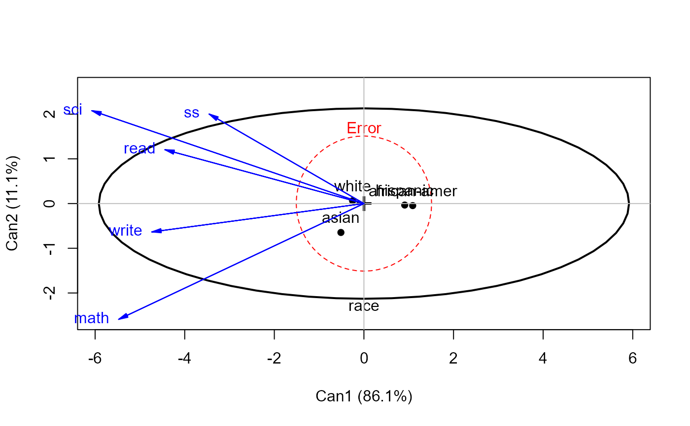

High School and Beyond Data
HSB.RdThe High School and Beyond Project was a longitudinal study of students in the U.S. carried out in 1980 by the National Center for Education Statistics. Data were collected from 58,270 high school students (28,240 seniors and 30,030 sophomores) and 1,015 secondary schools. The HSB data frame is sample of 600 observations, of unknown characteristics, originally taken from Tatsuoka (1988).
Usage
data(HSB)Format
A data frame with 600 observations on the following 15 variables. There is no missing data.
idObservation id: a numeric vector
gendera factor with levels
malefemaleraceRace or ethnicity: a factor with levels
hispanicasianafrican-amerwhitesesSocioeconomic status: a factor with levels
lowmiddlehighschSchool type: a factor with levels
publicprivateprogHigh school program: a factor with levels
generalacademicvocationlocusLocus of control: a numeric vector
conceptSelf-concept: a numeric vector
motMotivation: a numeric vector
careerCareer plan: a factor with levels
clericalcraftsmanfarmerhomemakerlaborermanagermilitaryoperativeprof1prof2proprietorprotectivesalesschoolservicetechnicalnot workingreadStandardized reading score: a numeric vector
writeStandardized writing score: a numeric vector
mathStandardized math score: a numeric vector
sciStandardized science score: a numeric vector
ssStandardized social science (civics) score: a numeric vector
Source
Tatsuoka, M. M. (1988). Multivariate Analysis: Techniques for Educational and Psychological Research (2nd ed.). New York: Macmillan, Appendix F, 430-442.
References
High School and Beyond data files: http://www.icpsr.umich.edu/icpsrweb/ICPSR/studies/7896
Examples
str(HSB)
#> 'data.frame': 600 obs. of 15 variables:
#> $ id : num 55 114 490 44 26 510 133 213 548 309 ...
#> $ gender : Factor w/ 2 levels "male","female": 2 1 1 2 2 1 2 2 2 2 ...
#> $ race : Factor w/ 4 levels "hispanic","asian",..: 1 3 4 1 1 4 3 4 4 4 ...
#> $ ses : Factor w/ 3 levels "low","middle",..: 1 2 2 1 2 2 1 1 2 3 ...
#> $ sch : Factor w/ 2 levels "public","private": 1 1 1 1 1 1 1 1 2 1 ...
#> $ prog : Factor w/ 3 levels "general","academic",..: 1 2 3 3 2 3 3 1 2 1 ...
#> $ locus : num -1.78 0.24 -1.28 0.22 1.12 ...
#> $ concept: num 0.56 -0.35 0.34 -0.76 -0.74 ...
#> $ mot : num 1 1 0.33 1 0.67 ...
#> $ career : Factor w/ 17 levels "clerical","craftsman",..: 9 8 9 15 15 8 14 1 10 10 ...
#> $ read : num 28.3 30.5 31 31 31 ...
#> $ write : num 46.3 35.9 35.9 41.1 41.1 ...
#> $ math : num 42.8 36.9 46.1 49.2 36 ...
#> $ sci : num 44.4 33.6 39 33.6 36.9 ...
#> $ ss : num 50.6 40.6 45.6 35.6 45.6 ...
# main effects model
hsb.mod <- lm( cbind(read, write, math, sci, ss) ~
gender + race + ses + sch + prog, data=HSB)
Anova(hsb.mod)
#>
#> Type II MANOVA Tests: Pillai test statistic
#> Df test stat approx F num Df den Df Pr(>F)
#> gender 1 0.19207 27.8615 5 586 < 2.2e-16 ***
#> race 3 0.20268 8.5207 15 1764 < 2.2e-16 ***
#> ses 2 0.04965 2.9886 10 1174 0.0009909 ***
#> sch 1 0.01225 1.4535 5 586 0.2032987
#> prog 2 0.21466 14.1152 10 1174 < 2.2e-16 ***
#> ---
#> Signif. codes: 0 '***' 0.001 '**' 0.01 '*' 0.05 '.' 0.1 ' ' 1
# Add some interactions
hsb.mod1 <- update(hsb.mod, . ~ . + gender:race + ses:prog)
heplot(hsb.mod1, col=palette()[c(2,1,3:6)], variables=c("read","math"))
hsb.can1 <- candisc(hsb.mod1, term="race")
heplot(hsb.can1, col=c("red", "black"))

#> Vector scale factor set to 6.5031
# show canonical results for all terms
if (FALSE) {
hsb.can <- candiscList(hsb.mod)
hsb.can
}